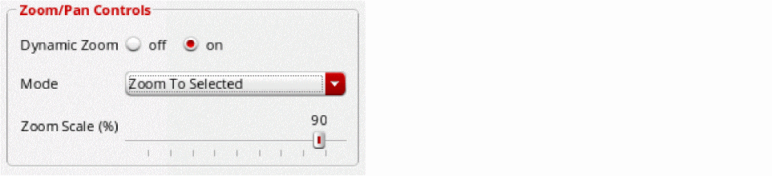

Using Dynamic Zoom
You can use the dynamic zoom feature to automatically pan or zoom on the canvas based on the objects selected in the Navigator assistant. This lets you locate objects easily in a busy design.
To set your preferred dynamic zoom mode:
-
In the layout window, select Options – Display.
The Display Options form appears.
 - Set Dynamic Zoom to on in the Zoom/Pan Controls section.
-
From Mode, select the dynamic zoom mode used when an object or a set of objects is selected/cross-selected in the Navigator assistant.
- Pan To Selected: Pans the view to the selected objects without changing the zoom factor. This is equivalent to View - Pan.
- Zoom To Selected: Zooms the view to the selected objects using the zoom scale defined in the Zoom Scale (%) field. This is equivalent to View - Zoom to Selected.
- Zoom To Fit: Fits the complete design in the view using the defined zoom scale. This is equivalent to View - Zoom to Fit.
- Specify the zoom scale in percentage by using the slider in Zoom Scale (%).
- Click OK.
- Enable dynamic zoom by choosing Options – Dynamic Zoom.
-
Select the item in the Navigator assistant that you want to zoom or pan to.
Based on your selection, the display area automatically zooms or pans to the selected item if not currently visible on the canvas.
Related Topics
Return to top